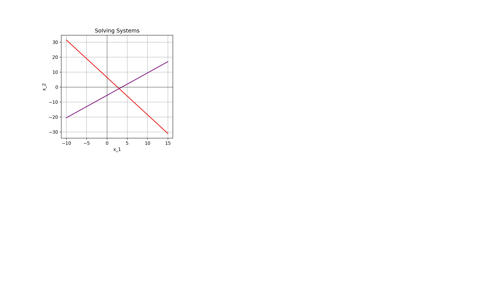

December 24, 2025
▶ Video excerpted from Dr. Jeffrey Chasnov’s Numerical Methods for Engineers playlist on YouTube.

Major Highlights from the Syllabus: I’ll ask you to read the syllabus, but the most important items are on the following slides.
Instructor: Dr. Adam Gilbert
e-mail address: a.gilbert1@snhu.edu
Office: Robert Frost Hall, Room 311
Office Hours (please visit!):
Slack for communication – see the Welcome Announcement on BrightSpace for how to join
Main Textbook: We are following Numerical Methods for Engineering with Python 3 by Jaan Kiusalaas
Python via Google Colab or a local Python installation is required (Colab recommended)
| Grade Item | Value |
|---|---|
| Participation | 5% |
| Homework (~8) | 40% |
| Unit Problem Sets / Exams (2) | 30% |
| Final Project and Reflection | 15% |
| Debrief Interviews | 10% |
Participation: Your collaboration in developing and implementing routines for solving problems is critical to our success in this course. You’ll earn credit for that work.
Homework: We’ll develop our routines in class together and you’ll apply those routines to solving problems on homework assignments.
Unit Problem Sets: We will have two (2) unit problem sets (or exams) during our semester.
Final Project and Reflection: In the final weeks of the semester, you’ll complete a short project that combines reflection and application. You’ll choose a numerical method we’ve studied and apply it to a meaningful problem in a domain you care about, resulting in a short paper and five slides.
Debrief Interviews: In the final two weeks of the semester, you’ll meet briefly with me to talk through a few problems and ideas from the course, explaining what you’ve learned in your own words. This conversation is an important part of your course assessment and focuses on understanding rather than memorization.
I’ve built a webpage to organize our course content.
Syllabus
Tentative timeline
Some lecture is going to be necessary here, but I hope it is collaborative
I have nearly complete sets of notes for you
Generally, we’ll spend class time slowly solving one problem, identifying the steps required to solve problems of that type, and then writing Python code to implement the solution strategy.
You’ll use the functionality we develop in class on homework assignments and unit problem sets.
My goal in this course is for all of you to learn as much about numerical methods as possible – we can’t achieve that if you don’t feel like you are benefiting from our class meetings.
Large language models like ChatGPT, Copilot, and friends are powerful and valuable tools for increasing productivity.
The production you are seeking here, in coursework, is learning though – not simply churning out correct answers
American science fiction writer Ted Chiang says that “Using ChatGPT to complete assignments is like bringing a forklift into the weight room; you’ll never improve your cognitive fitness that way.”
Andrew Heiss has published some thoughts about AI use, and I agree with much of what he’s said.
In this course, please stick to using AI for (i) troubleshooting broken python code or (ii) helping you with \(\LaTeX\).
Reminder: Complete the Week 1 Assignment on BrightSpace before the end of the day on Sunday!
Open our Day 1 Notebook and let’s get started.
Jupyter notebooks allow mixtures of executable Python code along with formatted text.
In Google Colab, there is support for “click-button” formatting.
The environment supports markdown syntax for formatting as well.
These notebooks consist of two types of cells – text/markdown or code cells
Shift and hit Enter (or Return)+ Text button to add a text cell.Code cells must consist of valid Python code or comments.
#) on a line will be ignored as a comment.""") in the line before the comment and the line after the comment.Execute a code cell by holding down Shift and hitting Enter (or Return)
At its most basic level, Python can function as a calculator. There are a few things to remember:
( and ) – can be used for grouping operations, but other types of brackets cannot be used since they are special characters.*).**)print() if you want to see multiple lines of output.=) operator.Variable names cannot begin with a number or contain spaces
Beyond this, Python will essentially let you do whatever you want. There are some additional rules you should strive to follow to make your own life easier:
Do not use keywords as names for your variables.
int = 34 – instead, use my_int = 34.Do use meaningful names for your variables.
xxyy = 17 – instead, use initial_guess = 17.Do Be consistent with your naming conventions.
my_int = 34 and then use initialGuess = 17 – commit to using camelCase or snake_case, but try not to mix the two.Do use meaningful but concise names.
initial_guess_for_minimum_over_the_closed_interval = 17 – just let initial_guess = 17 or initial_guess_minimum = 17.Python lists are sometimes convenient objects to work with.
Lists are defined using square brackets, as seen below.
We can access particular list elements using square brackets.
We just need to remember two things when doing so:
9[4, 9, 16]myList by using the append() method.Not everything works the way you would expect it to…
Sometimes behaviors are unexpected, like overwriting the entry of myList in index 1 resulting in the same change in myNewList.
There are always reasons for this…For example, when we assigned myNewList = myList, Python saves space by just having both objects reference the same location in memory.
Requesting a true copy of the object with .copy() was the appropriate thing to do, but such a thing is not obviously required.
Always check your work.
{numpy}We won’t actually use lists very often in our course
We’re much more interested in special structures, like arrays (think: vectors or matrices)
We can import the {numpy} module and use it to create these special structures
Note. We used the alias np so that we can type np.function_name() instead of numpy.function_name() when we want to use functionality from this module. Doing this is common in Python.
Now we can use np.array() with lists to define our structures.
{numpy} ArraysArithmetic on arrays works the way you would want it to work, mathematically.
Developers also build in some conveniences which aren’t mathematically meaningful, but are colloquially understandable and useful!
Computers are excellent at following instructions and performing tedious tasks.
It is often the case where we’ll want to perform the same set of instructions over and over again.
If we find ourselves in this situation, loops will be helpful.
We’ll encounter two types of loop in our course.
A for loop is useful when we know ahead of time how many iterations our instructions must be run for.
A while loop can be used when we would like to run a set of instructions over and over again until a condition is no longer satisfied.
while loops though – using the wrong stopping condition can lead to infinite loops or unnecessarily lengthy procedures.A for loop is useful when we know ahead of time how many iterations our instructions must be run for.
A while loop can be used when we would like to run a set of instructions over and over again until a condition is no longer satisfied.
while loops though – using the wrong stopping condition can lead to infinite loops or unnecessarily lengthy procedures.i is 0 and my_sum is 0
i is 1 and my_sum is 1
i is 2 and my_sum is 3
i is 3 and my_sum is 6
i is 4 and my_sum is 10
i is 5 and my_sum is 15The total sum is: 15A for loop is useful when we know ahead of time how many iterations our instructions must be run for.
A while loop can be used when we would like to run a set of instructions over and over again until a condition is no longer satisfied.
while loops though – using the wrong stopping condition can lead to infinite loops or unnecessarily lengthy procedures.Another useful way to control your code is with the use of conditional statements.
This allows for code to be executed if a condition is true, and perhaps other (or no) code to be executed if it is false.
We use if, elif, and else statements for this.
For example, look at the following for loop which will print out values of x between \(0\) and \(100\) which are divisible by \(13\).
It will often be the case that we’d like to write functions in our course.
Functions begin with the def keyword and end with a return statement.
Consider the following silly function which multiplies two numbers together.
Now that the product() function has been defined, we can use it!
Below is a perhaps more useful application.
We’ll leave this notebook with a simple example which will motivate our study for the remainder of the semester.
In Python, and in many computing languages, we can use a double equal (==) operator to test equality. We can also use the usual inequalities to test sizes of numbers.
…and everything had been going so well – we’ll investigate this next time!